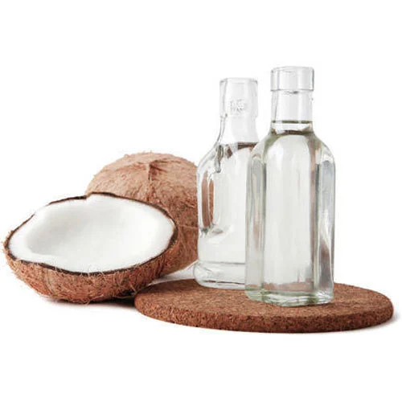

Buy Unrefined Virgin Coconut Oil Bulk Wholesale for Sale
HS Code: 15131110 Virgin coconut oil
Unrefined virgin coconut oil (VCO) is a premium natural oil extracted from fresh coconut meat through cold-press or centrifuge processes, without chemical refining or high heat treatment.

In the food and health industries, Unrefined virgin coconut oil (VCO) is widely used as a natural cooking oil, dietary supplement, and key ingredient in health and wellness products.
Unrefined virgin coconut oil (VCO) is rich medium-chain triglycerides (MCTs) and antioxidants provide numerous nutritional and functional benefits.
In the cosmetic and personal care sectors, Unrefined virgin coconut oil (VCO) serves as an excellent base oil for skincare, haircare, and aromatherapy formulations due to its moisturizing, antimicrobial, and soothing properties.
Beyond personal use, Unrefined virgin coconut oil (VCO) can also be utilized as a renewable raw material in pharmaceutical, nutraceutical, and oleochemical applications, supporting sustainable and eco-friendly production systems.
Get Premium Unrefined virgin coconut oil (VCO) for Sale
Are you looking for a reliable Indonesia bulk wholesale manufacturer and supplier of Unrefined Virgin Coconut Oil for your needs?You’ve come to the right place! Contact us at OneWholesaleIndo.com — we are committed to providing tailored solutions that meet your exact requirements.
We will assist you in sourcing products with the specific quality standards, quantities, and specifications you need. Logistics arrangements, export documentation, scure payment terms, and insurance coverage according to your preferences, ensuring a smooth and secure international transaction from Indonesia to your destination.
Unrefined virgin coconut oil (VCO) Uses
Food & Beverage Industry
- Function: Unrefined virgin coconut oil (VCO) serves as a healthy and natural cooking oil promote metabolism, energy, and overall wellness. It is prized for its light aroma, smooth texture, and nutritional value.
- How to Use:Unrefined virgin coconut oil (VCO) used directly as edible oil, salad dressing, or ingredient in health drinks, functional foods, and organic snacks. It can also replace conventional oils or butter in baking and frying for a healthier alternative.
Cosmetic & Personal Care Industry
- Function: Unrefined virgin coconut oil (VCO) acts as a natural emollient and moisturizer with antimicrobial and antioxidant properties, making it ideal for skincare, haircare, and body care formulations.
- How to Use:Unrefined virgin coconut oil (VCO) applied as a base oil in lotions, creams, lip balms, and hair serums, or blended with essential oils for aromatherapy and massage products.
Pharmaceutical & Nutraceutical Industry
- Function: Rich in lauric acid and bioactive compounds, Unrefined virgin coconut oil (VCO) supports immune function and digestive health. It is used in nutraceutical capsules, supplements, and medicinal formulations.
- How to Use:Unrefined virgin coconut oil (VCO) processed as a carrier oil or encapsulated as softgels, often combined with herbal extracts or vitamins for targeted health benefits.
Oleochemical Applications
- Function: Unrefined virgin coconut oil (VCO) provides a sustainable source of fatty acids for the production of esters, surfactants, and specialty oleochemicals used in high-value industries.
- How to Use: Unrefined virgin coconut oil (VCO) in oleochemical facilities as a raw material for the synthesis of cosmetic-grade esters, natural lubricants, and bio-based surfactants.
Animal Nutrition & Feed
- Function: Due to its high digestibility and MCT content, Unrefined virgin coconut oil (VCO) offers an additional energy source and supports gut health in livestock and pets.
- How to Use:Unrefined virgin coconut oil (VCO) blended in small proportions (typically below 3–5%) into animal feed or pet food formulations to enhance nutrition and energy density.
Indonesia Palm Fatty Acid Distillate (PFAD) for Sale
Indonesia is one of the world’s top coconut producers, blessed with abundant tropical resources and a year-round harvest that supports a strong and sustainable coconut industry.This solid production foundation enables Indonesia to be a reliable exporter of Unrefined Virgin Coconut Oil (VCO) to global markets across food, cosmetic, and health sectors.
Indonesian VCO is valued for its high purity, rich Medium-Chain Triglycerides (MCTs), and natural content of lauric acid, vitamin E, and antioxidants, making it a premium raw material for a wide range of applications.
With consistent production capacity, high quality standards, and competitive pricing, Indonesia delivers world-class Unrefined Virgin Coconut Oil (VCO) to meet the diverse needs of international buyers seeking sustainable and natural coconut-based products.